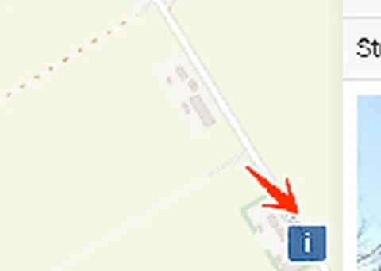

Link naar pagina: https://laadkaart.laadwerk.nl/
Van de achttien bevindingen die in september 2025 op deze pagina stonden, zijn er elf opgelost. Het logo heeft een toegankelijke naam gekregen waarin de zichtbare tekst staat, de knop naast het zoekveld heeft een naam, het zoekveld heeft de rol combobox, en de keuzelijsten onder de kaart hebben een toegankelijke naam. De focusrand is donkerblauw (#005A8C) geworden en haalt daarmee een contrastratio van 7,4:1 met de witte achtergrond. In de legenda staat elke status nu ook als tekst naast het pictogram, dus kleur is niet langer het enige verschil. De grijze en blauwe teksten op en onder de kaart hebben genoeg contrast gekregen, de pictogrammen in het paneel met de gegevens van een laadpaal hebben een tekstalternatief, en de koppen in dat paneel staan in kop-elementen. Hieronder staan de zeven punten die nog openstaan.
#18 - Kleurcontrast van tekst is te laag (tekst kleiner dan 24px en niet vetgedrukt)
Bovenaan de pagina staat de witte tekst "Geen laadpaal in de buurt? Dien verzoek in" op een groene achtergrond (#00A75D). De contrastratio is 3,1:1.
De kleur van die balk is wel veranderd. In september 2025 was hij lichtblauw (#00A4E9) en was de contrastratio met de witte tekst 2,8:1. Het contrast is dus iets omhoog gegaan, maar nog niet genoeg.
Oplossing:
Deze tekst is kleiner dan 24px en niet vetgedrukt, daarom moet de contrastratio minimaal 4,5:1 zijn. Op https://properaccess.nl/hoe-test-ik-kleurcontrast/ staat een instructie die uitlegt hoe je kleurcontrast test.
#22 - Keuzelijst heeft geen label, omdat de eerste optie als label is gebruikt
Onder de kaart staan keuzelijsten zonder zichtbaar label. De eerste optie doet dat werk, en die verdwijnt zodra een bezoeker een andere optie kiest. Daarna is niet meer te zien waar de keuzelijst over gaat, want de teksten van de opties spreken hier niet voor zich.
De keuzelijsten hebben nu wel een toegankelijke naam in de code, bijvoorbeeld aria-label="Filter op exploitant". Die naam leest een schermlezer voor, maar een ziende bezoeker ziet hem niet.
Oplossing:
Geef elke keuzelijst een label dat altijd zichtbaar is.
#26 - Het kleurcontrast tussen de informatieve pictogrammen in de legenda en op de kaart is niet voldoende
In de legenda onder de kaart en op de kaart zelf staan pictogrammen die informatie overbrengen. De groene pictogrammen (#7DBA27) hebben op de witte achtergrond een contrastratio van 2,4:1.
Oplossing:
Zorg dat informatieve onderdelen van de legenda en de kaart een contrastratio van minimaal 3,0:1 hebben met de achtergrond, zodat bezoekers ze van elkaar kunnen onderscheiden. Loop daarbij ook de andere kleuren op de kaart na.
#27 - Toestand van de knop wordt niet doorgegeven aan de schermlezer
Rechtsonder in de kaart staat een knop met een "i". Die knop opent en sluit extra inhoud, en heeft in de code de titel "Attributions". In de code staat niet of die inhoud op dit moment open of dicht is.

Bezoekers die de pagina zien, kunnen aan de knop aflezen of de extra inhoud open of dicht staat. Blinde en slechtziende bezoekers die een schermlezer gebruiken, kunnen dat niet.
Oplossing:
Voeg het aria-expanded-attribuut toe aan de knop, of voeg visueel verborgen tekst toe die de toestand aangeeft.
#32 - Interactieve elementen hebben geen juiste toegankelijke rol en geen toegankelijke naam
Op de kaart staan laadpictogrammen die de gegevens van een laadpaal openen. Deze elementen hebben geen juiste rol en geen toegankelijke naam.
Elk HTML-element heeft een rol. De rol zegt wat het element doet, en welke eigenschappen en functies het heeft. Schermlezers en andere hulpsoftware moeten die rol kennen om aan de bezoeker door te geven wat er staat en wat hij ermee kan.
Oplossing:
Geef deze elementen de juiste rol, bijvoorbeeld met een button-element. Geef ze daarnaast een toegankelijke naam, bijvoorbeeld met een aria-label.
#33 - Interactieve elementen zijn niet met het toetsenbord te bedienen
Dezelfde laadpictogrammen op de kaart zijn niet met het toetsenbord te bereiken en niet met het toetsenbord te openen. Bezoekers die geen muis gebruiken, komen dus niet bij de gegevens van een laadpaal.
Oplossing:
Zorg dat een bezoeker deze elementen met de Tab-toets kan bereiken en met Enter of de spatiebalk kan activeren.
#34 - Bezoekers die inzoomen tot 400% kunnen niet meer alle functies gebruiken
Op een scherm van 1280 bij 1024 pixels, ingezoomd tot 400%, zijn de kaart en de legenda niet meer zichtbaar en niet meer te bedienen. De keuzelijsten onder de kaart vallen daarmee ook weg.
Oplossing:
Zorg dat alles blijft werken als een bezoeker inzoomt tot 400% op een scherm van 1280 bij 1024 pixels.